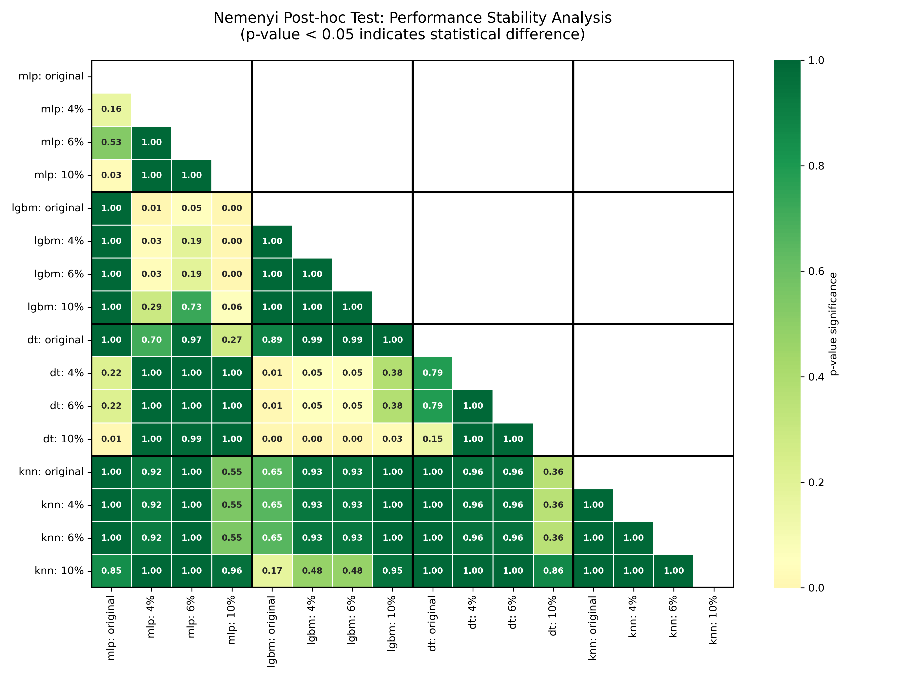
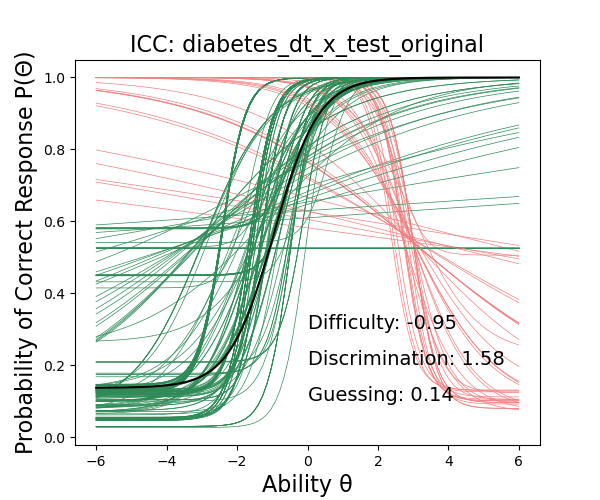
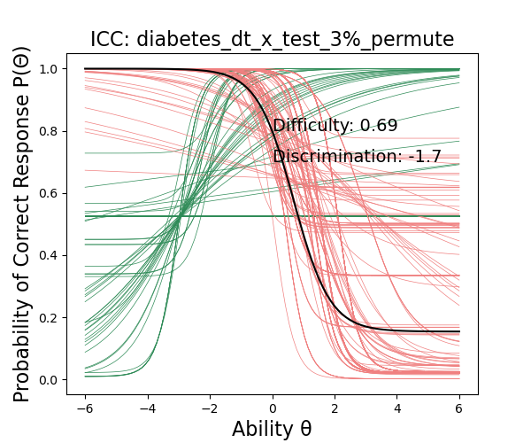

Distribuição das Features e Impacto da Perturbação

Figura 1: Mapeamento de distribuição e densidade do espaço amostral original.
Métrica de Distância de Ranqueamento (ARD)
Figura 2: Variação das distâncias médias de ranques (ARD) por algoritmo sob ruído incremental.
Mapeamento Multidimensional do Comportamento (MCA / Clustering)
Figura 3: Agrupamento latente revelando a consistência das explicações extraídas.
Métrica de Distância de Ranqueamento (ARD)
Figura 2: Variação das distâncias médias de ranques (ARD) por algoritmo sob ruído incremental.
Mosaico de Curvas de Resposta ao Item (ICCs) - Dataset Diabetes

Atributo: Plas

Atributo: Mass
Atributo: Age
Atributo: Preg
Atributo: Insu
Atributo: Pres
Atributo: Skin
Atributo: Pedi
Figura 8: Mosaico global de ICCs apresentando os parâmetros de dificuldade (b) e discriminação (a) por atributo.
Mosaico de Curvas de Resposta ao Item (ICCs) - Dataset Diabetes
Atributo: Plas
Atributo: Mass
Atributo: Age
Atributo: Preg
Atributo: Insu
Atributo: Pres
Atributo: Skin
Atributo: Pedi
Figura 8: Mosaico global de ICCs apresentando os parâmetros de dificuldade (b) e discriminação (a) por atributo.